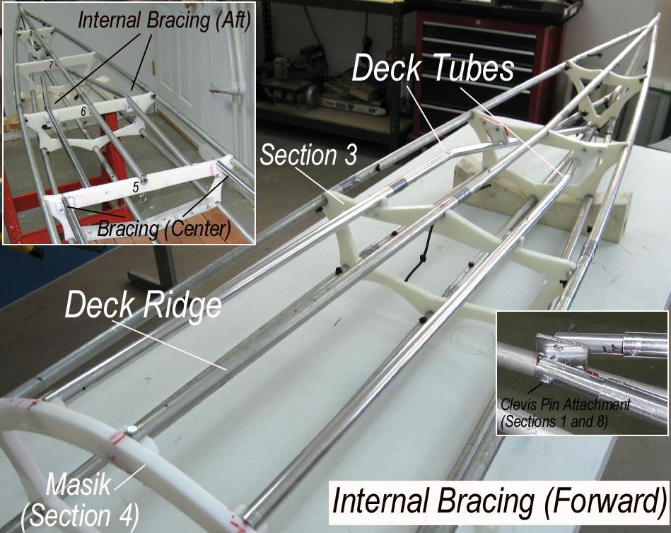

| Sea Rider Frame Changes - ( Internal Bracing) - 1 of 3 | Menu Previous Page Next Page |
|

Two additional forward and aft deck tubes have been added to the Sea Rider for resistance to longitudinal and lateral frame flex. The tubes run straight until passing cross sections 3 (forward) and 6 (aft), and are then bent for connection to the keel near cross section 1 and 8. Aluminum plates / clevis pins connect the deck tubes to the keel. Additional tubes connect sections 4 (Masik) and section 5. Both this system and the single deckridge bracing method (Sea Glider) are being tested as replacements for the inwales used previously.
|
|